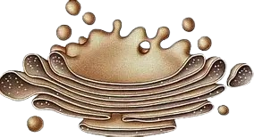

Plant Cell Organelles
Explore the main organelles that make up the plant cell and their
functions below. Then scroll to the bottom of the page and return to
the
home screen, now with a better understanding after analyzing all the
organelles this cell type has. And take a look again at the
representations of the organelles in our model!
Chloroplast
carries out the process of photosynthesis in plant cells (plants) and protists (algas)
.png)
Ribosomes
They produce proteins, which can be found free in the cytoplasm or in the rough reticulum.

Rough Endoplasmic Reticulum
presents Ribosomes attached to the surface of
their
membranes.Protein synthesis that will be exported
from the cell

Smooth Endoplasmic Reticulum
responsible for lipid synthesis, detoxification of
substances, storage of calcium ions, and the production of some
plant
hormones.

Golgi complex
secretes, modifies, and sends secretions out of the cell (Cell Secretion)
Peroxissomos
degrade amino acids and lipids, helping with cellular detoxification
.png)
Plant Vacuole
stores water, salts, and nutrients, maintaining the turgor pressure that supports the plant

Mitochondria
produces energy (ATP) through cellular respiration.
Cell nucleus
control of cellular activities and hereditary characteristics of organisms.

Return to the home screen